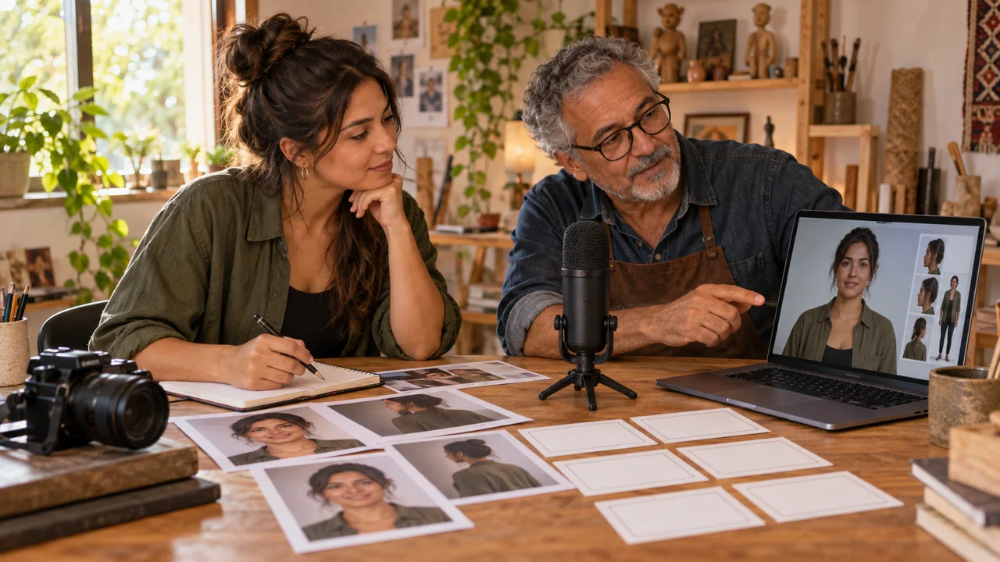

Vídeo com IA · v6.2 · curso gratuito
Rosto, voz e movimento
Prepare uma fala em português, anime seu apresentador e confira boca, gesto e identidade. Crie um processo reutilizável para vídeos curtos.
começar agora →4 módulos · 12 aulas de ~15 min de leitura guiada · reserve 5–9 h com a produção, além das filas

O que você sai fazendo
Como estudar
Leia em sessões curtas e execute a prática no tempo indicado. O progresso fica neste navegador. Faça cópias pela opção de exportar na jornada.
As imagens das aulas são ilustrações geradas no Codex, não resultados de vídeo. Para concluir a produção, você precisa de acesso às ferramentas escolhidas de voz e avatar com os recursos correspondentes. Confira créditos e recursos antes de começar.
O caso Oficina Clara
Bia, produtora, e Otávio, instrutor, planejam apresentações para uma oficina. Há dois caminhos: representar o próprio professor ou criar Nina, uma apresentadora virtual. Você aplica os exercícios à sua própria identidade ou a uma personagem inventada.
As entregas incluem um teste no HeyGen, uma fala no Kling e um teste de movimento. A série de quatro episódios exige produção adicional. Confira o acesso antes de começar e mantenha etapas não executadas como pendentes.
Pré-requisito: saber salvar arquivos e produzir um vídeo simples. Se precisar, comece por Seu Primeiro Vídeo com IA.
Para quem é
É para você se
- Já produziu um vídeo simples e quer controlar melhor os testes.
- Tem referências próprias e aceita revisar resultados e custos.
- Prefere aprender fazendo.
Não é para você se
- Já domina o assunto e busca algo técnico.
- Quer videoaula tradicional.